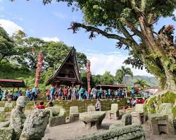
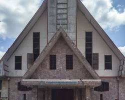
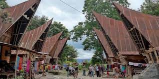

Destinasi Wisata

Pemandian Air Soda Parbubu

Situs Batu Siallagan

Gereja HKBP Sion Tarutung

Tarutung adalah ibu kota Kabupaten Tapanuli Utara yang sekaligus menjadi pusat pemerintahan dan perekonomian dari Kabupaten Tapanuli Utara.
Kota Tarutung merupakan kecamatan yang memiliki luas wilayah terkecil tetapi memiliki kepadatan penduduk tertinggi di Kabupaten Tapanuli Utara.[1]
Tarutung juga dikenal sebagai kota wisata rohani di mana di kota tersebut berdiri bangunan salib megah yang dinamai Salib Kasih.